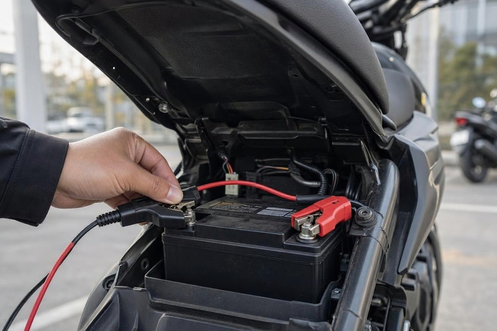
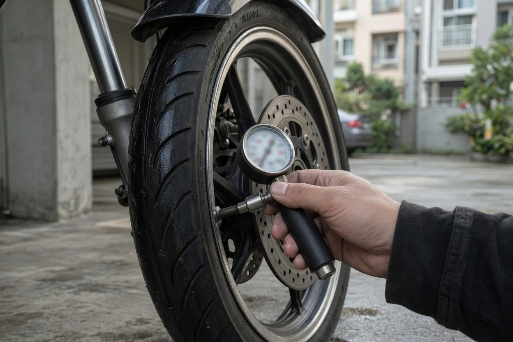
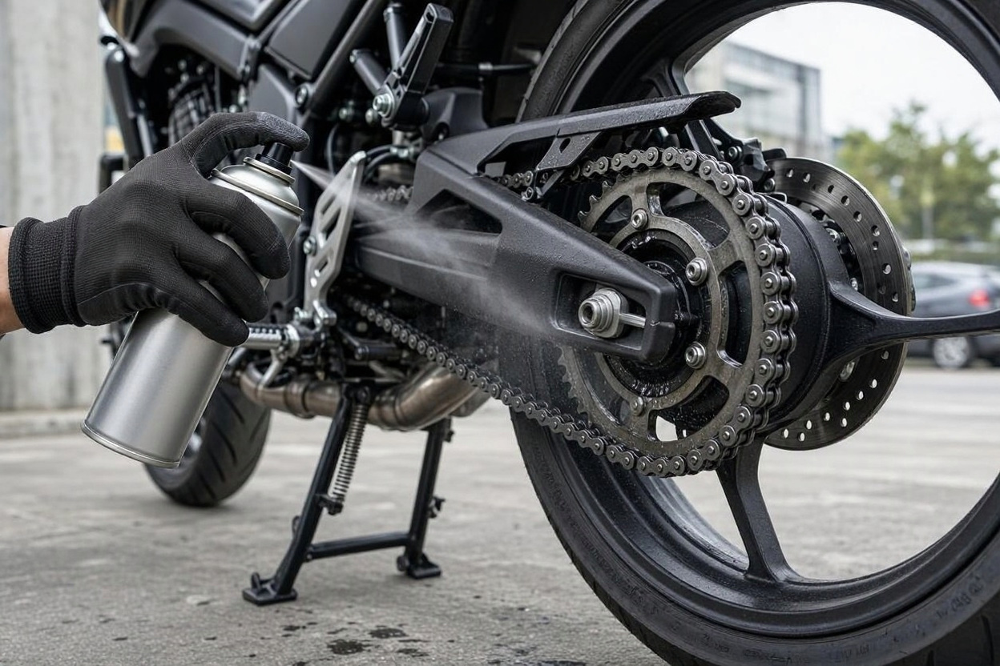
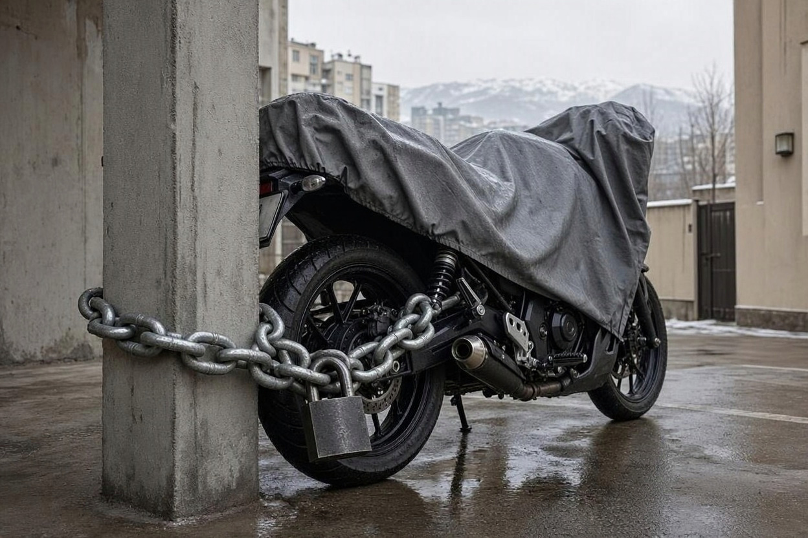

چطور موتورسیکلت را برای زمستان در پارکینگ بخوابانیم؟ ۷ نکته
آذر که میرسد، خیلی از موتورسوارها موتور را گوشهی پارکینگ ساختمان میگذارند، یک کاور رویش میکشند و تا فروردین سراغش نمیروند. بهار که میشود، باتری خالی است، موتور با هر استارت فقط سرفه میکند و لاستیکها یک طرفشان صاف شده است.
خواباندن موتورسیکلت در زمستان یعنی آماده کردن موتور برای چند هفته یا چند ماه استفادهنشدن، طوری که کمترین آسیب را ببیند. در این راهنمای کارماچک برای بررسی خودرو و موتورسیکلت، هفت کار اصلی را از باتری تا لاستیک توضیح میدهیم و میگوییم بهار موتور را چطور بیدار کنید.
برای خواباندن موتورسیکلت در زمستان، باتری را جدا کنید یا به شارژر نگهدارنده وصل کنید، باک را پر کنید و در موتورهای کاربراتوری سوخت کاربراتور را خالی کنید، روغن را عوض کنید، لاستیکها را باد کرده و موتور را روی جک وسط بگذارید، زنجیر را تمیز و روغنکاری کنید، موتور را تمیز و خشک زیر کاور تنفسپذیر بگذارید و قفل محکم بزنید.
خلاصه در یک دقیقه
- باتری مهمترین قطعهای است که در خواب زمستانی آسیب میبیند؛ آن را جدا یا با شارژر نگهدارنده شارژ نگه دارید.
- سوخت مانده در کاربراتور با گذشت زمان کهنه میشود و میتواند مسیرهای ریز کاربراتور را بگیرد.
- روغن کارکرده را قبل از خواب عوض کنید، نه بعد از آن.
- هفتهای یک بار روشن کردن چنددقیقهای موتور، بدون رانندگی، معمولاً بیشتر ضرر دارد تا فایده.
- در موتورهای آبخنک، ضدیخ مناسب سرمای پارکینگ را بررسی کنید.
چه زمانی باید موتورسیکلت را برای زمستان خواباند؟
اگر قرار است موتور چند هفته یا بیشتر روشن نشود، خواباندن اصولی ارزشش را دارد. برای چند روز توقف لازم نیست کاری بکنید، اما از حدود یک ماه به بعد، باتری، سوخت و لاستیکها کمکم اثر بیحرکتی را نشان میدهند.
محل نگهداری هم مهم است. پارکینگ سرپوشیدهی ساختمان از فضای باز بهتر است، اما رطوبت، رفتوآمد ماشینها و گاهی موش و جانوران کوچک، مسائل خودش را دارد. اگر موتور در فضای باز میماند، کاور و قفل اهمیت بیشتری پیدا میکنند.
۷ نکته خواباندن موتورسیکلت در زمستان
این هفت کار را به همین ترتیب انجام دهید. بیشترشان در یک بعدازظهر و با ابزار ساده تمام میشوند.
۱. باتری را جدا کنید یا شارژ نگه دارید
باتری حتی وقتی موتور خاموش است، کمکم خالی میشود و بعضی موتورها مصرفکنندهی دائمی مثل دزدگیر یا ساعت دارند. باتری که مدت طولانی خالی بماند، ممکن است دیگر شارژ کامل نگیرد.
- اگر برق در دسترس است، باتری را به یک شارژر نگهدارندهی هوشمند وصل کنید که خودش شارژ را کنترل میکند. شارژر معمولی را برای مدت طولانی وصل نگذارید.
- اگر برق ندارید، اول سر منفی و بعد سر مثبت را باز کنید و باتری را در جای خشک و دور از یخزدگی نگه دارید.
- هر چند هفته یک بار ولتاژ یا وضعیت شارژ باتری جداشده را چک کنید و در صورت نیاز شارژش کنید.

۲. باک را پر و کاربراتور را خالی کنید
باک نیمهپر فضای بیشتری برای هوا و رطوبت دارد و در باکهای فلزی میتواند به زنگزدگی داخلی کمک کند. پس باک را پر کنید. اگر پایدارکنندهی سوخت در دسترس دارید و دفترچه مجاز میداند، آن را اضافه کنید و چند دقیقه موتور را روشن نگه دارید تا به همهجا برسد.
در موتورهای کاربراتوری، سوخت مانده در کاسهی کاربراتور با گذشت زمان کهنه میشود و رسوبش میتواند ژیگلورها را بگیرد. شیر بنزین را ببندید و بگذارید موتور تا خاموش شدن کار کند، یا کاسهی کاربراتور را از پیچ تخلیه خالی کنید. موتورهای انژکتوری این مرحله را ندارند.
۳. روغن را قبل از خواب عوض کنید
روغن کارکرده آلودگی و محصولات احتراق را در خود دارد و اگر ماهها در موتور بماند، بهتر است تازه باشد. موتور را چند دقیقه گرم کنید تا روغن روان شود، بعد روغن و در صورت نیاز فیلتر را عوض کنید. اگر سررسید تعویض روغن نزدیک است، این بهترین زمان برای آن است.
۴. لاستیک ها را باد کنید و وزن را از رویشان بردارید
لاستیکی که ماهها زیر وزن موتور و با باد کم یک جا بماند، ممکن است در نقطهی تماس تغییر شکل بدهد. باد هر دو لاستیک را به عدد دفترچه برسانید و اگر جک وسط یا پایهی نگهدارنده دارید، موتور را رویش بگذارید تا حداقل یکی از چرخها از زمین فاصله بگیرد.

۵. زنجیر و قطعات متحرک را روغن کاری کنید
زنجیر خشک و کثیف در رطوبت زمستان زودتر زنگ میزند. زنجیر را با تمیزکنندهی مخصوص تمیز کنید، بگذارید خشک شود و بعد اسپری روغن زنجیر بزنید. سیم کلاچ و گاز، محور اهرمها و پایهها را هم روغنکاری کنید. در موتورهای آبخنک، غلظت ضدیخ را بررسی کنید تا شبهای سرد پارکینگ مشکلی ایجاد نکند.

۶. موتور را تمیز و خشک زیر کاور تنفس پذیر بگذارید
گل و نمک جاده اگر روی بدنه و قطعات فلزی بماند، در طول زمستان کار خودش را میکند. موتور را بشویید و کاملاً خشک کنید، بعد کاور بکشید. کاور پارچهای تنفسپذیر بهتر از نایلون است، چون نایلون رطوبت را زیر خودش حبس میکند.
اگر پارکینگ موش دارد، دهانهی اگزوز و ورودی هوا را با یک پوشش قابل برداشت ببندید و یک یادداشت روی فرمان بگذارید تا بهار پیش از روشن کردن یادتان نرود آن را بردارید.
۷. قفل محکم بزنید و جای مناسب انتخاب کنید
موتوری که ماهها در یک جا ثابت مانده، برای سارق هدف آسانتری است. با قفل زنجیری محکم، موتور را به یک نقطهی ثابت ببندید و سوئیچ را روی موتور جا نگذارید. اگر قوانین ساختمان دربارهی جای پارک موتور چیزی میگوید، از قبل هماهنگ کنید تا وسط زمستان مجبور به جابهجایی نشوید.

اشتباه های رایج در نگهداری زمستانی موتور
بعضی کارهایی که از سر دلسوزی انجام میشوند، نتیجهی عکس دارند:
- روشن کردن چنددقیقهای هر هفته: موتوری که فقط چند دقیقه در جا کار کند، به دمای کامل نمیرسد، رطوبت داخلش جمع میشود و باتری هم شارژ مصرفشده را پس نمیگیرد. یا موتور را آنقدر برانید که کاملاً گرم شود، یا اصلاً روشنش نکنید.
- کاور نایلونی: رطوبت را زیر خودش نگه میدارد و روی قطعات فلزی و رنگ اثر میگذارد.
- رها کردن روغن کارکرده: تعویض روغن را به بهار سپردن یعنی روغن آلوده ماهها در موتور بماند.
- فراموش کردن پوشش اگزوز: روشن کردن موتور با دهانهی بستهی اگزوز یا ورودی هوا میتواند آسیب بزند؛ برای همین یادداشت روی فرمان مهم است.
بهار موتور را چطور بیدار کنیم؟
بیدار کردن موتور هم ترتیب دارد. عجله در این مرحله میتواند بخشی از زحمت پاییز را هدر بدهد.
- پوششها را بردارید:پوشش اگزوز و ورودی هوا را باز کنید و دنبال لانه یا آثار جویدگی سیمها بگردید.
- باتری را وصل کنید:اول سر مثبت و بعد سر منفی را ببندید و مطمئن شوید باتری شارژ کامل دارد.
- مایعات را چک کنید:سطح روغن، روغن ترمز و در موتورهای آبخنک ضدیخ را بررسی کنید و دنبال نشتی بگردید.
- لاستیک و ترمز را ببینید:باد لاستیک را تنظیم کنید و چند بار ترمز جلو و عقب را امتحان کنید تا از عملکردشان مطمئن شوید.
- شیر بنزین را باز کنید و روشن کنید:در موتور کاربراتوری کمی صبر کنید تا کاسه پر شود. بگذارید موتور در جا گرم شود و بعد با یک مسیر کوتاه و آرام شروع کنید.
موتور بعد از زمستان مشکوک کار می کند؟
اگر بعد از بیدار کردن، موتور صدا، دود یا رفتار غیرعادی دارد یا میخواهید بهار آن را بفروشید، یک بررسی تخصصی وضعیتش را روشنتر میکند.
جزئیات کارشناسی موتورسیکلتخرید موتوری که زمستان خوابیده چه ریسکی دارد؟
بهار بازار موتورسیکلت معمولاً گرمتر میشود و خیلی از موتورهای آگهیشده تازه از خواب زمستانی بیرون آمدهاند. موتوری که اصولی خوابانده شده مشکلی ندارد، اما موتوری که ماهها بدون مراقبت مانده، ممکن است باتری ضعیف، کاربراتور گرفته، لاستیک تغییرشکلداده یا زنجیر زنگزده داشته باشد.
از فروشنده بپرسید موتور زمستان کجا و چطور نگهداری شده و آخرین تعویض روغن کی بوده است. استارت سخت، دور موتور نامنظم در حالت سرد و زنگزدگی روی زنجیر و پیچها نشانههایی هستند که باید جدی گرفت.
پیش از معامله، کارشناسی موتورسیکلت پیش از خرید کمک میکند این ایرادها قبل از پرداخت پول مشخص شوند. اگر هنوز در حال انتخاب مدل هستید، فهرست بهترین موتورسیکلت تا یک میلیارد تومان را هم ببینید.
کارماچک چه کمکی می کند؟
کارماچک یک ارائهدهندهی خدمات کارشناسی خودرو و موتورسیکلت در ایران است. ما فقط ایراد را شناسایی نمیکنیم؛ اثر آن روی هزینه تعمیر و ارزش واقعی معامله را هم مشخص میکنیم.
جمع بندی
خواباندن موتورسیکلت در زمستان کار پیچیدهای نیست: باتری را حفظ کنید، سوخت کاربراتور را خالی کنید، روغن را تازه کنید، وزن را از روی لاستیکها بردارید، زنجیر را روغن بزنید، موتور را خشک زیر کاور تنفسپذیر بگذارید و قفل محکم بزنید. یک بعدازظهر کار در پاییز، معمولاً از یک بهار پر از تعمیر ارزانتر تمام میشود.
قبل از خرید یا فروش بهاری، موتور را بررسی کنید
اگر بهار قصد خرید یا فروش موتورسیکلت دارید، یک گزارش مستقل از وضعیت فنی و بدنه، معامله را شفافتر میکند.
درخواست کارشناسی موتورسیکلتسؤالات متداول
آیا هر هفته باید موتور را چند دقیقه روشن کنم؟
معمولاً نه. چند دقیقه کار کردن در جا، موتور را به دمای کامل نمیرساند و رطوبت داخل موتور و اگزوز جمع میشود؛ باتری هم شارژ مصرفشدهی استارت را جبران نمیکند. اگر میخواهید موتور را روشن کنید، آنقدر برانید که کاملاً گرم شود. در غیر این صورت بهتر است تا بهار روشنش نکنید.
باتری موتور را باز کنم یا به شارژر وصل بگذارم؟
هر دو روش درست است. اگر برق و شارژر نگهدارندهی هوشمند دارید، باتری را وصل نگه دارید تا شارژش حفظ شود. اگر ندارید، باتری را جدا کنید، در جای خشک و دور از یخزدگی نگه دارید و هر چند هفته وضعیت شارژش را چک کنید. برای باتریهای لیتیومی دستور سازنده را دنبال کنید.
باک را پر بگذارم یا خالی؟
در بیشتر موتورها پر بودن باک بهتر است، چون فضای کمتری برای هوا و رطوبت میماند و احتمال زنگزدگی باک فلزی کمتر میشود. در موتورهای کاربراتوری، کاسهی کاربراتور را جداگانه خالی کنید تا سوخت کهنه مسیرهایش را نگیرد. اگر دفترچه دستور دیگری دارد، آن را دنبال کنید.
موتور بدون جک وسط را چطور نگه دارم؟
اگر موتور جک وسط ندارد، میتوانید از پایهی نگهدارندهی چرخ عقب استفاده کنید. اگر آن هم در دسترس نیست، باد لاستیکها را تنظیم کنید و هر چند هفته موتور را کمی جلو و عقب ببرید تا نقطهی تماس لاستیک با زمین عوض شود و فشار همیشه روی یک نقطه نماند.
بهار موتور روشن نمیشود؛ اول چه چیزی را چک کنم؟
اول باتری و اتصال سرهای آن را بررسی کنید، چون شایعترین دلیل است. بعد مطمئن شوید شیر بنزین باز است، پوشش اگزوز و ورودی هوا برداشته شده و سوئیچ قطعکن روشن است. اگر موتور کاربراتوری است و ماهها با سوخت کهنه مانده، ممکن است کاربراتور نیاز به تمیزکاری داشته باشد.
آیا نگهداری زمستانی روی قیمت فروش موتور اثر دارد؟
بهطور غیرمستقیم بله. موتوری که بعد از زمستان راحت روشن میشود، لاستیک و زنجیر سالم دارد و سابقهی تعویض روغنش روشن است، در بازدید و کارشناسی وضعیت بهتری نشان میدهد. خریدار هم با دیدن این نشانهها راحتتر به وضعیت موتور اعتماد میکند.